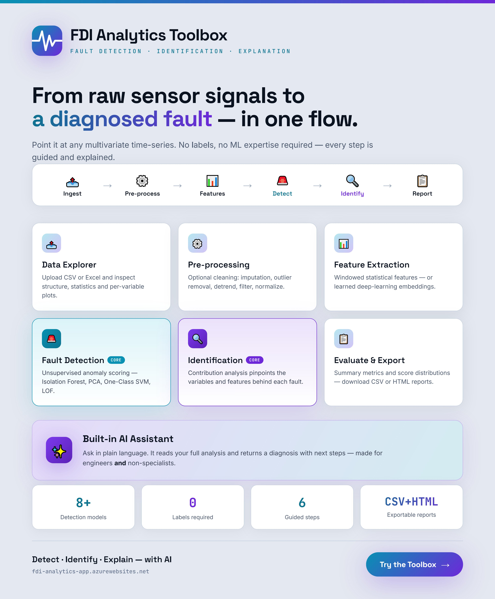
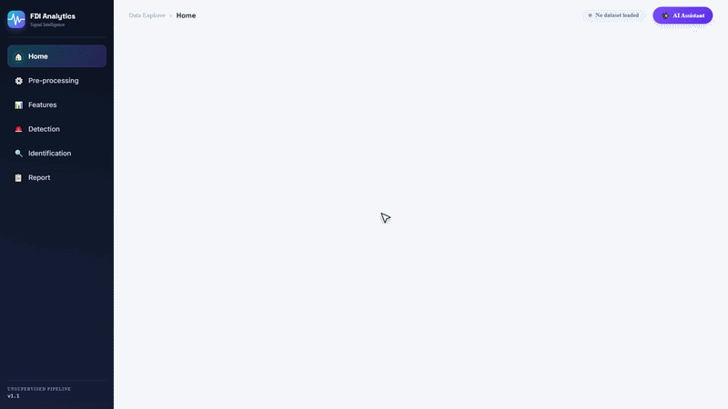

FDI Analytics: An Open Toolbox for Unsupervised Fault Detection
Industrial equipment generates enormous amounts of sensor data — vibration, temperature, pressure, current — logged continuously over time. Buried in that data are the early signs of faults. The hard part is that you usually don't have labeled examples of past failures to learn from: real breakdowns are rare, which is exactly why they're so costly and so difficult to collect data on.
FDI Analytics is a point-and-click toolbox I've been building to tackle exactly this problem. It performs unsupervised fault detection and identification on industrial sensor data — meaning it learns what "normal" looks like directly from your data, then flags whatever no longer fits, without ever needing a labeled fault to train on. It answers two practical questions for a piece of equipment:
- Is something unusual happening? — fault detection.
- Which variable looks most responsible? — fault identification.
The whole thing runs in a web browser with no coding required — which means it's equally at home with a maintenance engineer on a plant floor, a curious first-time user, or a researcher benchmarking methods. It's live now on Azure, and the full source, documentation, and video walkthrough are on GitHub.
The six-stage workflow
You work top-to-bottom through six stages, and each stage's output feeds automatically into the next.
A defining design choice runs through every stage: each one offers both a traditional method (classical statistics and machine learning) and a deep-learning method (a small neural network that learns its own patterns), switchable with a single toggle. You start traditional for a fast read, and escalate to deep learning when you want a closer look.
Features, stage by stage
Load your data
Drag in a CSV or Excel file. A preview table and an interactive Variable Explorer let you eyeball each signal and catch an obviously broken sensor before going further.
Pre-processing
Five optional, independently toggled clean-up steps applied in order, with a before/after comparison chart to confirm each did what you intended.
Steps: missing-value handling · outlier removal · detrending · noise filtering / smoothing · normalization / scaling.
Feature extraction
A sliding window moves across the signal, summarizing each window into descriptive numbers.
Traditional: mean, standard deviation, RMS, variance, skewness, kurtosis, peak-to-peak, crest factor, dominant frequency, spectral energy.
Deep learning: Dense, LSTM, or 1D-CNN autoencoders that learn a compact latent embedding per window.
Fault detection
The toolbox learns the shape of "normal" and flags windows that don't fit, controlled by a single intuitive contamination sensitivity dial.
Traditional: PCA (Hotelling's T²), Isolation Forest, One-Class SVM, Local Outlier Factor.
Deep learning: Autoencoder, Variational Autoencoder, Deep SVDD.
Fault identification
For every flagged window, it ranks which variable and which feature deviated most from normal — a strong first clue for root-cause investigation, with a per-window drill-down.
Traditional: Z-score vs. a normal baseline.
Deep learning: Autoencoder Residual, Gradient × Input Saliency.
Evaluation & report
A headline summary, an anomaly-score distribution, a feature-deviation heatmap, and a ranking of top implicated variables — all exportable as a CSV or a printable HTML report to attach to a maintenance ticket.
Long-running actions — training, detection, feature extraction — all show a live progress bar with a working Cancel button, so nothing ever feels like it's silently hanging.
A built-in, context-aware AI assistant
The feature I'm most excited about is the AI assistant, available from every page. It isn't a generic chatbot bolted on — it already knows the live state of your analysis: what data is loaded, which features were extracted, and what detection just found. That's why its answers are specific to your run rather than generic advice.
Ask it "why was window 140 flagged?" or "which preprocessing should I try next?" in plain English, or use one-click prompts like Interpret detection results and Traditional vs. deep learning. It interprets results and suggests next steps, but never changes your data or settings — it's a thinking aid, not an autopilot. It works with OpenAI, Anthropic (Claude), a local Ollama model, or a custom internal endpoint, so it can run fully on-premises when data can't leave the building.
Who it's for
The same toolbox serves three very different kinds of user, because each stage was designed to be shallow enough to click through yet deep enough to dig into.
Operators, maintenance & process engineers
You already log sensor data but rarely have labeled failures — and that's exactly the case this handles. No coding, no training data, just a spreadsheet and a browser. Detection runs off a single intuitive contamination dial; a flagged window points you straight to the suspect variable; and one click exports a printable report to attach to a maintenance ticket. Because the AI assistant can run against a local Ollama model, the whole thing works fully on-premises when plant data can't leave the building.
General & first-time users
Every screen, setting, and term is written in plain language, with a picture-led quick-start guide, a tutorial video, and a glossary for anything unfamiliar. The interactive charts let you learn by doing — watch a feature change window by window, or see the before/after of a clean-up step. And when a result is puzzling, the built-in AI assistant explains it in plain English, so you're never stuck staring at a number you don't understand.
Academic users & students
Traditional and deep-learning methods sit side by side at every stage — four detection algorithms (PCA, Isolation Forest, One-Class SVM, LOF) next to three neural ones (Autoencoder, VAE, Deep SVDD), plus multiple feature and identification methods. That makes it a ready-made testbed for comparing approaches, a baseline to benchmark new methods against, and a zero-code way to demonstrate FDI concepts in a classroom. Features and results export as CSV for downstream analysis, and the whole codebase is open source and extensible.
How it's built
FDI Analytics is a single-page web application written entirely in Python on top of Dash — Plotly's framework for building analytical web apps without leaving Python. There's no separate JavaScript front-end to maintain: the UI, the callbacks, and the numerical work all live in one codebase.
The stack
- Dash + Plotly — the entire interface and every interactive chart (anomaly-score plots, heatmaps, before/after comparisons).
- pandas + NumPy — data handling and the sliding-window feature engineering.
- scikit-learn — the traditional detectors: PCA / Hotelling's T², Isolation Forest, One-Class SVM, and Local Outlier Factor, plus the scalers.
- SciPy — signal processing for the pre-processing stage (e.g. Savitzky–Golay smoothing) and statistical features (skewness, kurtosis).
- PyTorch (CPU build) — the deep-learning method family: autoencoders for features, and Autoencoder / VAE / Deep SVDD for detection.
Application architecture
A few deliberate design decisions hold the app together:
- Manual page routing. A single
dcc.Locationdrives a router callback that renders each of the six pages on demand, so the app behaves like a multi-page tool while staying one process. - Shared state via browser stores. The uploaded data, processed data, feature table, detection results, and even the AI-assistant conversation each live in a
dcc.Store. That's what lets you move freely between pages without losing anything — each stage reads the previous stage's store and writes its own. - A reactive callback graph. Roughly three dozen callbacks wire controls to outputs; changing a setting invalidates only what depends on it, and the heavy "Run" actions are explicit buttons rather than live-updating, since they can take real time.
Long-running work, done responsibly
Training a network or scanning a large dataset can take a while, so those actions run as Dash background callbacks backed by a diskcache manager. That's what powers the live progress bar and the working Cancel button — the work happens off the request thread and can be interrupted cleanly. The deep-learning models are defined as a small set of PyTorch nn.Module classes (dense, LSTM, and 1D-CNN autoencoders, plus VAE and Deep SVDD variants).
Graceful degradation
Two capabilities are optional by design. If PyTorch isn't installed, the app still runs fully — the deep-learning options simply show a clear "how to enable this" message instead of crashing. Likewise, if the diskcache backend is absent, every action still completes synchronously, just without the progress bar and Cancel button. This keeps the barrier to a first run as low as possible.
Deployment
The app is containerized and deployed on Microsoft Azure (App Service). The build and serving procedure is intentionally lean:
- Slim base image. It builds on
python:3.12-slim— no compiler toolchain, since everything installs from pre-built CPU wheels. - Layered dependency install. Requirements install in their own Docker layer before the app code is copied, so day-to-day edits to
app.pydon't trigger a full reinstall. - CPU-only PyTorch. Torch is pulled from the dedicated CPU wheel index rather than the default, which avoids dragging in multi-gigabyte CUDA packages and keeps the image small — a real cost and cold-start win on App Service.
- Production WSGI server. The container doesn't use Dash's development server. It exposes the underlying Flask
serverobject and serves it with Waitress, with a generous channel timeout so long training and detection jobs aren't cut off mid-run. - Writable cache volume. The diskcache directory is set via an environment variable so it can point at a writable location in the container, and the deployment is kept to a single instance so that background-callback progress state stays consistent.
The result is a self-contained image that runs identically on a laptop and in the cloud — you can try the running instance any time at fdi-analytics-app.azurewebsites.net.
The heart of the container, in miniature:
FROM python:3.12-slim
WORKDIR /app
# Deps first (cached across app.py edits)
COPY requirements.txt .
RUN pip install --no-cache-dir -r requirements.txt
# CPU-only Torch — avoids multi-GB CUDA packages
RUN pip install --no-cache-dir torch \
--index-url https://download.pytorch.org/whl/cpu
COPY app.py .
COPY assets/ ./assets/
# Serve the Flask server object with Waitress
CMD ["waitress-serve", "--host=0.0.0.0", \
"--port=8050", "--channel-timeout=1200", "app:server"]Technical poster

Walkthrough
Here's a quick look at the toolbox in action — the identification stage ranking the variables behind a flagged window:

For the full walkthrough — from loading data all the way to exporting a report — watch the video:
Documentation
The GitHub repository includes complete documentation so anyone can get started at their own pace — a step-by-step tutorial video, a picture-led quick-start guide, and a comprehensive user manual that explains every screen, setting, and term in plain language (no data-science background assumed).
What's next
The toolbox is actively evolving. Directions I'm planning or exploring next:
- Real-time / streaming monitoring — moving from batch analysis toward live data feeds (e.g. OPC UA connectivity) for continuous, scheduled detection.
- Richer causal analysis — going beyond ranking single variables toward mapping how a fault propagates between them, drawing on causal-discovery methods.
- Model persistence — saving trained detectors and embeddings so a "normal" baseline can be reused across runs and datasets.
- Historian & database connectors — reading directly from industrial data sources rather than file uploads.
- Semi-supervised mode — optionally folding in the occasional known-fault label when one is available.
- Scalability — handling larger datasets and more variables efficiently.
The toolbox is open and free to use — I'd genuinely value your feedback. If you try it, tell me what worked, what broke, and what you'd want next.
Try the live demo, explore the code and documentation on GitHub, and please open an issue or reach out via the contact page with any comments. Every bit of feedback helps shape where this goes.